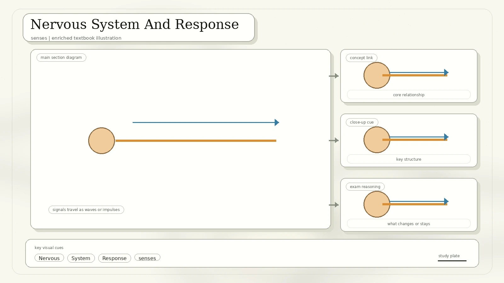
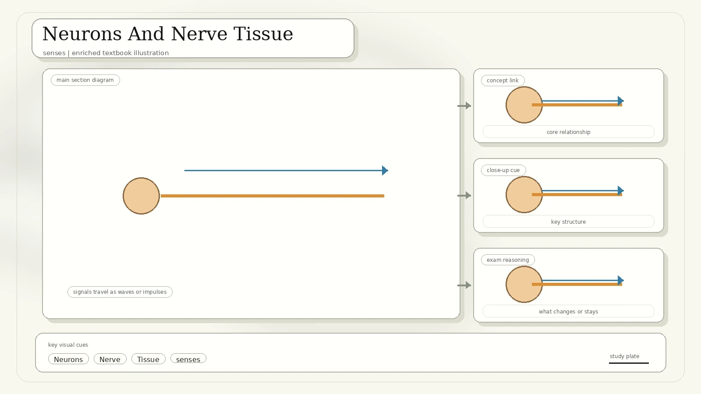
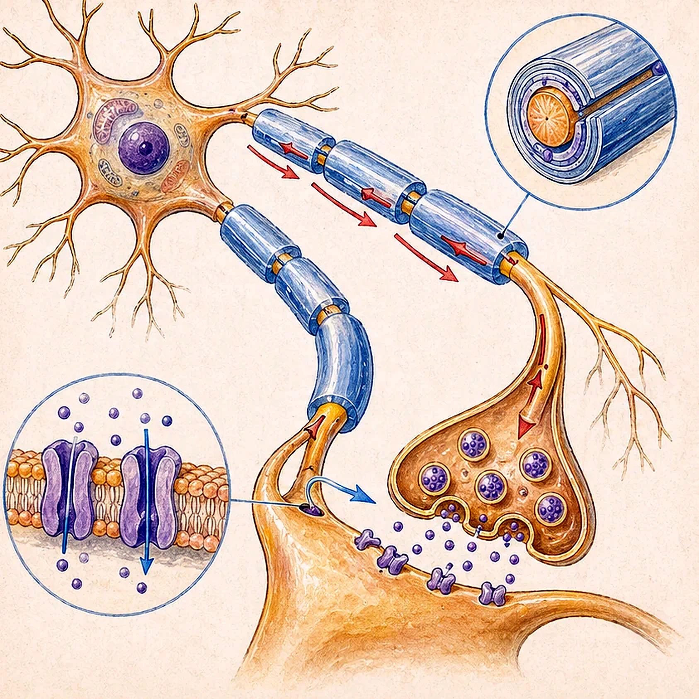
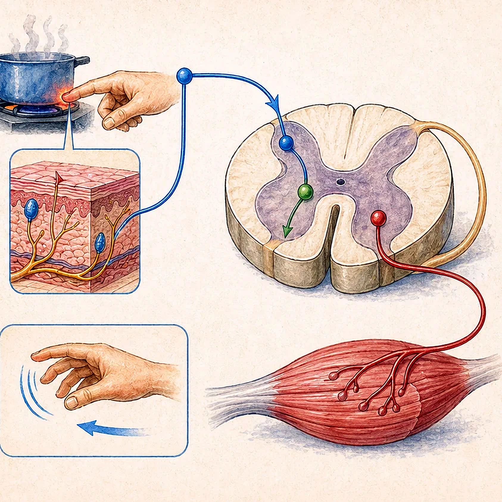
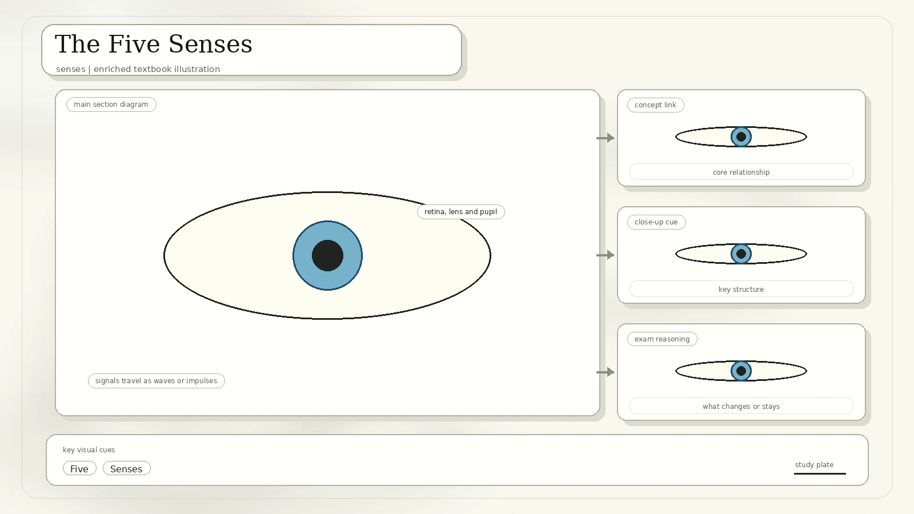
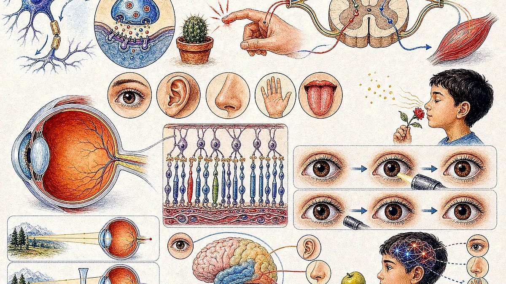
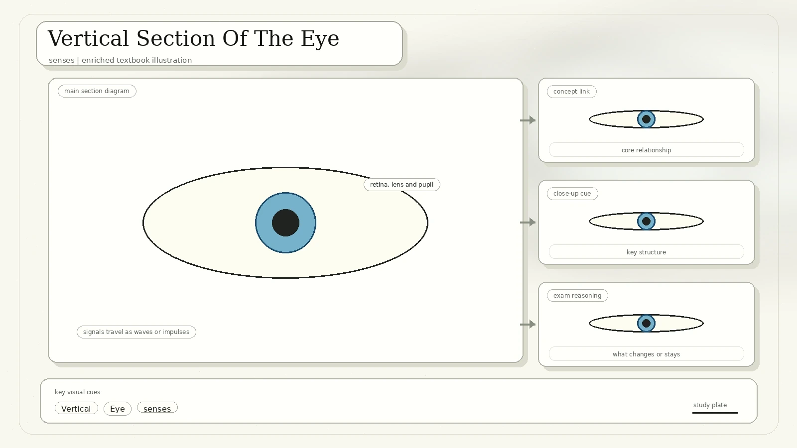
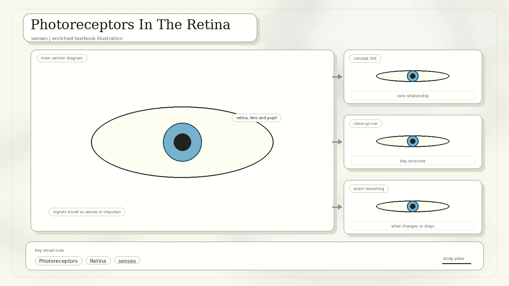
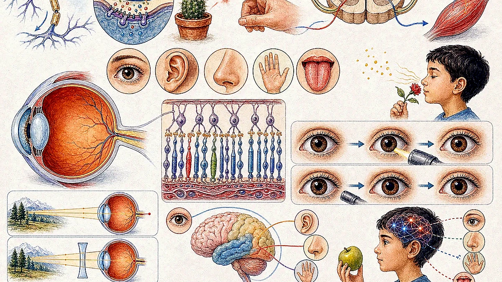

Nervous System And Response
The scan compares invertebrate nervous systems, from a nerve net to bilateral systems, and then identifies the human central and peripheral nervous systems.

The CNS consists of the brain and spinal cord.
The PNS consists of nerves connecting the CNS and the rest of the body.
A change in the environment that causes an organism to react. Stimuli are detected by sensory receptors.
A change in the body as a result of a stimulus.
Muscle cells or gland cells that carry out the response to stimuli.
| Action Type | Meaning | Examples From The Scan |
|---|---|---|
| Voluntary actions | Actions consciously controlled. | Choosing to move a limb. |
| Involuntary actions | Actions that cannot be consciously controlled. | Heartbeat, peristalsis, vasoconstriction, and reflex actions. |
Neurons And Nerve Tissue
A neuron is a nerve cell. Nerves are bundles of neurons wrapped in connective tissue. Neurons share a cell body containing the nucleus and organelles, plus slender nerve fibres for long-distance impulse transmission.

Responds to stimuli affecting sensory organ cells and relays signals to the CNS. It has a smooth rounded cell body, one long dendron, and a short axon.
Also called an intermediate neuron. It transmits nerve impulses from sensory neurons to motor neurons and is found within the CNS.
Transmits nerve impulses from the CNS to effector muscle or gland cells. It has branching dendrites around the cell body and a long myelinated axon.
Axons and dendrons: axons conduct impulses away from the cell body. Dendrons are branched projections that conduct impulses toward the cell body. Terminal branches connected to muscles are motor end plates.
Axons, Myelin, And Synapses
In the PNS, supporting Schwann cells form an electrically insulating myelin sheath around axons. About 80% of the myelin sheath consists of lipids.
- Gaps between adjacent Schwann cells are nodes of Ranvier.
- The myelin sheath increases impulse speed by allowing impulses to jump from node to node.
- A synapse is a junction between two neurons or between a neuron and an effector.
- At a synapse, impulses from one axon are transmitted to another neuron or effector cell.
- Impulses cross the tiny synaptic cleft by chemicals called neurotransmitters.

Reflex Action
Reflex actions are involuntary responses to a specific stimulus. They cannot be consciously controlled. The pathway of nerve impulses during a reflex is a reflex arc.

The Five Senses
The nervous system includes specific organs that allow us to experience taste, sight, smell, touch, and hearing.

Front View Of The Human Eye
The scan labels iris, pupil, sclera, conjunctiva, cornea, and tear gland.

| Part | Function |
|---|---|
| Iris | Pigmented circular sheet of muscles controlling pupil contraction and dilation through circular and radial muscles. |
| Pupil | Hole in the middle of the iris allowing light to enter the eye. |
| Sclera | Tough white outer layer of connective tissue. |
| Conjunctiva | Thin transparent mucous membrane that helps lubricate the eye. |
| Cornea | Transparent refractive layer covering iris and pupil. It causes most refraction of light entering the eye and is continuous with the sclera. |
| Tear gland | Secretes tears to lubricate the eye, nourish the cornea, and keep it free from dust. |
Vertical Section Of The Eye
The eye is a focusing system. Light is refracted by the cornea and lens, focused onto the retina, and converted into nerve impulses for the brain.

| Structure | Scan Description |
|---|---|
| Choroid | Black middle layer between sclera and retina. Contains blood vessels and prevents internal reflection of light. |
| Retina | Innermost layer containing photoreceptors connected to optic-nerve endings. |
| Lens | Transparent biconvex structure that refracts light onto the retina. Flexible curvature supports accommodation. |
| Ciliary body | Contains ciliary muscles controlling lens curvature and produces aqueous humour. |
| Suspensory ligament | Connects ciliary body to lens. |
| Aqueous humour | Transparent watery substance between cornea and lens. Keeps front of eye firm and helps refraction. |
| Vitreous humour | Clear gel between lens and retina. Keeps eyeball firm and helps refract light onto retina. |
| Fovea | Yellow pit in retina where images are usually focused. |
| Optic nerve and blind spot | Optic nerve transmits visual information to the brain. The blind spot is where the optic nerve leaves the retina and no photoreceptors are present. |
Photoreceptors In The Retina
Photoreceptors include rods and cones.

Enable colour vision in bright light. The scan lists red, blue, and green cones.
More sensitive to light than cones. They allow dim-light vision but only in black and white.
A generic term including protanopia, protanomaly, deuteranopia, and deuteranomaly.
Focusing And Myopia Control
Accommodation changes lens curvature to focus sharp images on the retina. The retina sends impulses to the brain, which sends impulses to ciliary muscles.

Diverging rays enter the eye. Ciliary muscles contract, suspensory ligaments slacken, and the elastic lens becomes thicker and rounder for more refraction.
Almost parallel rays enter the eye. Ciliary muscles relax, suspensory ligaments become taut, and the lens becomes thinner and less curved for less refraction.
Correction or control of myopia from the scan: spectacles, atropine eyedrops, contact lenses, orthokeratology, refractive surgery, and progressive or multifocal lenses.
The Pupil Reflex
The pupil reflex is an involuntary action where pupils constrict or dilate in response to changing light intensities.

Circular muscles in the iris contract, radial muscles relax, and the pupil constricts.
Circular muscles relax, radial muscles contract, and the pupil dilates.